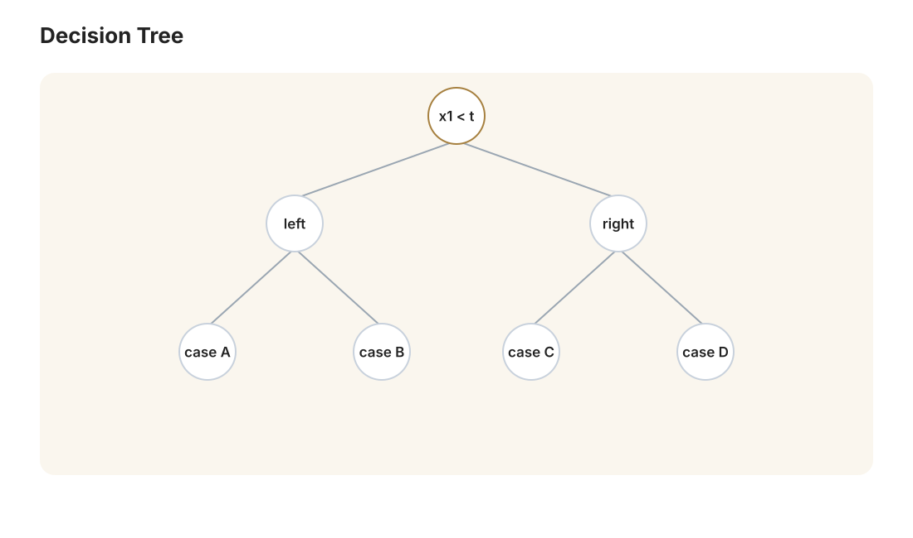

本讲目录
第 03 讲 · 决策树与贝叶斯方法
诞生场景：SVM 的分界线在高维空间里，很难直接改写成一串人能复核的问题；浅层决策树则可以依次问“某个特征是否超过阈值”。决策树把这种提问式分类自动学出来，在树较小且特征有清楚语义时尤其容易解释；树很深、特征经过复杂加工时，这个优势会迅速减弱。另一条思路更直接：第 01 讲证明了理论最优解是 \(\arg\max_k \mathbb{P}(Y=k \mid x)\)，那干脆直接估计这个概率——这就是贝叶斯方法。两者代表了与“画分界线”不同的归纳偏置。
学习层：为什么是这一刀？
具体情境：纸飞机擂台的八次试飞
把每次试飞压缩成两个玩具特征：\(x_1\) 是机翼展开度，\(x_2\) 是尾翼折角；标签 \(+1\) 表示“落进彩带区”，\(-1\) 表示“没落进”。这只是一个可手算的课堂数据集，不是对真实飞行或安全的判断。样本为 A=(1,1,+)、B=(2,1,+)、C=(3,2,+)、D=(4,2,+)、E=(1,4,−)、F=(2,4,−)、G=(3,3,−)、H=(4,3,−)。
先预测：哪一个问题值得先问？
默认候选是 \(x_1\le 2.5\)。不计算公式，先猜：左右两叶会更纯，还是仍然各有两种颜色？如果改问 \(x_2\le 2.5\)，你预计 gain 会变大、变小还是不变？再猜 Entropy 与 Gini 是否会选同一刀；点击实验前把答案写下来。
最小模型：一个节点只问一个轴对齐问题
在当前节点样本集 \(S\) 上，候选问题是 \(x_j\le t\)。它把数据分为左子集 \(S_L\) 与右子集 \(S_R\)，评价式为 \(\operatorname{Gain}=I(S)-\frac{|S_L|}{|S|}I(S_L)-\frac{|S_R|}{|S|}I(S_R)\)。\(I\) 可以切换为 Entropy \(H=-\sum_k p_k\log_2p_k\) 或 Gini \(G=1-\sum_kp_k^2\)；子节点样本数是权重，不能只把两个杂质做普通平均。
本数据每个特征的排序值都是 1、2、3、4，所以合法阈值只有相邻不同值的中点：1.5、2.5、3.5。任意落在同一相邻区间里的阈值产生同样的左右成员，因此在“\(x_j\le t\)”且评分只依赖成员归属时，检查中点就足够；它不是随便挑了几个漂亮的小数。
动手实验：换特征、换准则、寻找最佳切分
静态后备：固定样本为 A=(1,1,+)、B=(2,1,+)、C=(3,2,+)、D=(4,2,+)、E=(1,4,−)、F=(2,4,−)、G=(3,3,−)、H=(4,3,−)。默认使用 Entropy、特征 \(x_1\)、阈值 \(2.5\)：父节点 \(H(S)=1\) bit；左、右两叶均为 2 正 + 2 负，所以 \(H(S_L)=H(S_R)=1\) bit；加权后杂质 \(\frac48\cdot1+\frac48\cdot1=1\)，gain = 0。
同一默认切分换成 Gini 时，父、左、右和加权后分别为 0.5、0.5、0.5、0.5，gain = 0。按“先枚举 \(x_1\) 再枚举 \(x_2\)，每个特征内阈值从小到大；并列保留先遇到者”的确定性规则，Entropy 的最优结果是 \(x_2\le2.5\)：两叶纯净、加权后杂质 0、gain = 1 bit；Gini 选同一刀，gain = 0.5。脚本加载后可切换特征、合法中点和准则，点击“寻找最佳切分”或“重置”。
误区与边界：这一刀不是整棵树的答案
- 贪心不等于全局最优：节点只最大化当前一步的 gain，并没有穷举所有深度的树；后续递归、停止条件和剪枝可能改变最终模型。一个眼前 gain 较小的切分，下面可能更容易得到好叶子。
- 纯净不等于可靠：纯节点的 Entropy 和 Gini 都是 0，但这只表示训练节点内没有标签混杂；深树把噪声也切成纯叶，容易过拟合。预剪枝用最大深度、最小叶子样本数或最小 gain 提前停；后剪枝先长树再折叠子树，复杂度参数要用验证集或交叉验证选择。
- 边界样本不是支持向量：树里的“边界”只是阈值两侧相邻的观测值；它们没有 SVM 的最大间隔、KKT 乘子或全局特殊地位。改变一个样本可能改变候选中点，模型也会随之改变。
- 工程边界：连续特征可以按排序中点枚举；类别特征没有天然中点，需考虑类别子集或编码并防止高基数偏好；缺失值要预先约定插补、单独分支或学习默认方向，不能把
NaN当作普通数值排序。
回到算法：贪心的一刀如何递归
对当前节点重复四步：① 对每个特征取排序后的相邻不同值中点；② 用同一个准则计算父杂质、两侧杂质、样本数加权后的杂质与 gain；③ 按确定性 tie-break 取最大 gain；④ 对左右子集递归，直到纯节点、样本太少、达到深度上限或 gain 不够。于是“可解释的提问”只是贪心搜索留下的树结构；它并没有因为能画成流程图就自动获得全局最优或因果解释。
迁移题：把这套选择搬到新数据
若把 H 的标签翻成正类，重新列出 \(x_1\) 与 \(x_2\) 的合法中点，哪一个首刀会变化？若把“尾翼折角”换成材质类别，你会如何定义候选分组并防止高基数特征取巧？最后给一个缺失 \(x_2\) 的样本，比较插补、单独缺失分支和默认方向三种工程处理应如何用验证集而不是训练 gain 选择。

1. 决策树：用问题划分世界
一棵决策树是一个流程图：内部节点是关于某个特征的问题（"花瓣长 < 2.45 cm？"），分支是答案，叶节点是分类结论。预测 = 从根走到叶。它的假设空间是对特征空间的轴平行矩形划分：每片叶子对应一个超矩形区域，区域内输出同一类。
学习问题：给定训练集，怎么长出一棵“好”树？在常见目标与约束下寻找全局最优决策树是 NP-hard；主流的大规模实现通常采用贪心递归（也存在面向小规模问题的最优树求解器）：
- 在当前节点，遍历所有特征、所有切分点，选"分得最好"的那个问题；
- 按答案把数据分成子集，对每个子集递归；
- 满足停止条件（节点纯了 / 样本太少 / 达到深度上限）就变成叶子，输出多数类。
一切的关键在于："分得好"怎么量化？
1.1 为什么用熵度量混乱：香农的公理化
直觉：一个节点里全是同一类（“纯”），就不用再问了；一半一半（“乱”），最需要问。需要一个“混乱度”函数 \(H(p_1, \dots, p_K)\)（\(p_k\) 是节点内第 \(k\) 类的比例）。在 Shannon–Khinchin 的一组标准条件下，这个函数在正比例常数意义下唯一：
- 对称性与连续性：交换类别名称不改变 \(H\)，且 \(H\) 随概率连续变化；
- 均匀分布的单调性：\(H(\frac1K, \dots, \frac1K)\) 随 \(K\) 递增；
- 可分解性（分组公理）：分两步观察的混乱度可加，总熵等于组间熵加上按组概率加权的组内熵。例如 \(H(\tfrac12, \tfrac13, \tfrac16) = H(\tfrac12, \tfrac12) + \tfrac12 H(\tfrac23, \tfrac13)\)；
- 零概率类别不改变结果：加入一个概率为 0 的类别不应增加不确定性。
定理（Shannon 1948）：满足上述标准条件的函数必为
证明骨架：记 \(A(K) = H(\frac1K,\dots,\frac1K)\)。由可分解性，均匀分布上 \(A(K^m) = m\,A(K)\)（把 \(K^m\) 个等可能结果看成 \(m\) 步、每步 \(K\) 选一）；结合单调性可证 \(A(K) = c\log K\)（这是柯西函数方程的经典套路：对任意 \(K, L\) 与大 \(m\)，用 \(K^m\) 夹在 \(L\) 的幂之间，得 \(A(K)/A(L) = \log K / \log L\)）。再对有理概率 \(p_k = n_k / n\) 用可分解性：把 \(n\) 个等可能结果分成大小为 \(n_k\) 的组，\(c\log n = H(p_1,\dots,p_K) + \sum_k p_k\, c\log n_k\)，整理即得 \(H = -c\sum p_k \log p_k\)；无理概率由连续性补全。\(\blacksquare\)
取 \(c = 1\)、对数以 2 为底，单位是比特。二分类时 \(H(p) = -p\log_2 p - (1-p)\log_2(1-p)\)：纯节点 \(H = 0\)，对半开 \(H = 1\) 比特。它给出无失真编码平均码长的下界，也可理解为最优二元提问复杂度的核心尺度，而不是保证某棵有限树恰好只问 \(H\) 个问题。熵不是拍脑袋选的，是公理与编码意义共同支撑的。 交叉熵（第 07 讲 LLM 的损失函数）建立在同一套信息论地基上，这里埋下伏笔。
1.2 信息增益与三大算法
一个问题的价值 = 问之前的混乱度 − 问之后的期望混乱度。设按特征 \(A\) 把节点 \(S\) 分成 \(\{S_v\}\)：
后一项是条件熵 \(H(S \mid A)\)，信息增益就是互信息。贪心选增益最大的特征切分——这是 ID3（Quinlan 1986）。
信息增益有个偏病：偏爱取值多的特征（极端例子：按"身份证号"切分，每个子节点纯得发亮，增益最大，但毫无泛化价值——这是过拟合的漫画版）。C4.5 用增益率修正：\(\mathrm{GainRatio} = \mathrm{Gain}(S,A) / H_A(S)\)，其中 \(H_A(S) = -\sum_v \frac{|S_v|}{|S|}\log\frac{|S_v|}{|S|}\) 是切分本身的熵，取值越碎惩罚越大。
CART（Breiman 1984；许多实现的默认分类准则是 Gini，但也可切换到 Entropy 或 log loss）常用基尼指数：
含义：按节点内的类别比例独立、有放回地抽取两次，类别不同的概率。Gini 与 Shannon 熵都是关于类别比例的对称、凹杂质：纯节点取 0，均匀分布最大；Gini 正是 \(q=2\) 的 Tsallis 熵，不是 Shannon 熵在所有概率向量上的一阶 Taylor 近似。两者在许多分裂上排序接近，却没有保证选出同一刀；准则、停止条件和剪枝仍可能让整棵树不同。CART 只做二叉切分，且支持回归（叶子输出均值、准则换成方差减少量）。
1.3 剪枝：树的正则化
不加限制的树可以继续长到叶子纯净、样本耗尽或实现的停止条件触发——它可能完美背下训练集，测试时崩盘（第 01 讲：低偏差高方差的极端）。两类对策：
- 预剪枝：设最大深度、叶子最少样本数、增益阈值，长到就停。简单常用，但短视（当前增益小的切分下面可能藏着好切分）；
- 后剪枝（代价复杂度剪枝）：先长出较大的树，再沿子树序列比较 \(C_\alpha(T)=R(T)+\alpha|T_{\mathrm{leaf}}|\)。这里 \(R(T)\) 是叶子预测造成的经验风险；经典 CART 分类可用叶子误分类风险，回归用平方误差，具体实现也可能采用相应的杂质代理。\(\alpha\) 用验证集或交叉验证选择。
一眼认出：这就是第 01 讲的"损失 + 正则"，\(|T|\) 是复杂度惩罚，\(\alpha\) 是滑块。
1.4 从一棵树到一片森林
单棵树的天性是高方差：数据换一点点，第一刀切在别处，整棵树面目全非。既然方差大，就用平均消方差——Bagging（Bootstrap Aggregating）：自助采样出 \(B\) 份训练集，各训一棵树，预测取投票/平均。
方差降多少？设各树预测的方差为 \(\sigma^2\)、两两相关系数为 \(\rho\)，则平均后
第一项可以靠加树消掉，剩下的地板由树之间的相关性 \(\rho\) 决定。随机森林（Breiman 2001）的点睛之笔正是压 \(\rho\)：每个节点只允许在随机抽取的特征子集中选切分；分类任务常见启发式是 \(m\approx\sqrt d\)，但它是可调超参数而非定理。另一条路线是 Boosting（AdaBoost / GBDT / XGBoost）：不并行平均，而是串行修正前一轮的错误；AdaBoost 调整样本权重，梯度提升拟合损失对当前预测的负梯度（平方损失下才直接表现为残差）。树集成在许多表格数据任务上仍是很有竞争力的强基线，但优势取决于数据规模、特征类型、评价指标和调参预算。
2. 贝叶斯方法：直接对概率建模
2.1 生成式 vs 判别式
第 01 讲的最优解 \(f^*(x) = \arg\max_k \mathbb{P}(Y = k \mid x)\)。两条路线逼近它：
- 判别式（discriminative）：直接建模 \(\mathbb{P}(Y \mid X)\) 或直接学分界面——逻辑回归、SVM、神经网络；
- 生成式（generative）：建模联合分布，即类先验 \(\mathbb{P}(Y)\) 和类条件分布 \(\mathbb{P}(X \mid Y)\)（"每一类的数据长什么样"），再用贝叶斯公式反推：
分母与 \(k\) 无关，判类时只需比较分子：\(\hat y = \arg\max_k \mathbb{P}(x \mid Y=k)\,\mathbb{P}(Y=k)\)。
（"生成式"这名字你不陌生——生成式 AI 正是这个词。学到了 \(\mathbb{P}(X \mid Y)\) 就能采样造出新数据：给定类别"猫"生成猫图，给定前文生成下一个词。第 07 讲的 LLM 和第 16 讲的扩散模型都是生成式建模的后代。）
2.2 朴素贝叶斯：一个大胆的假设
难点：\(x\) 是 \(d\) 维的，\(\mathbb{P}(x \mid Y=k)\) 是 \(d\) 维联合分布——若每维取 \(V\) 个值，要估 \(V^d\) 个参数，数据根本不够（维数灾难）。朴素（naive）假设：给定类别，各特征条件独立：
参数量从 \(O(V^d)\) 暴跌到 \(O(dV)\)。假设显然是错的（"免费"和"中奖"在垃圾邮件里明明强相关），但先看它能走多远。
2.3 参数怎么估：MLE 的完整推导
以文本分类为例（垃圾邮件识别，朴素贝叶斯的成名战）：词表大小 \(V\)，文档表示为词的序列，类别 \(k\) 的参数是词分布 \(\theta_{kw} = \mathbb{P}(\text{词} = w \mid Y = k)\)。设类别 \(k\) 的训练文档里词 \(w\) 共出现 \(n_{kw}\) 次，总词数 \(n_k = \sum_w n_{kw}\)。对数似然：
拉格朗日函数 \(L = \sum_w n_{kw}\log\theta_{kw} + \lambda(1 - \sum_w \theta_{kw})\)，求偏导置零：
代入约束 \(\sum_w \theta_{kw} = 1\) 得 \(\lambda = n_k\)，故
——最大似然估计就是词频。类先验同理：\(\hat{\mathbb{P}}(Y=k)\) 等于类别 \(k\) 的文档占比。
2.4 零频率灾难与拉普拉斯平滑（Dirichlet 先验的 MAP 推导）
词频估计有个致命 bug：训练集中垃圾邮件从没出现过"教授"这个词 \(\Rightarrow \hat\theta_{\text{spam},\text{教授}} = 0\) \(\Rightarrow\) 任何含"教授"的邮件，垃圾类概率恰好为零——一个连乘里的一个零否决一切，无论其余 999 个词多么可疑。没见过 ≠ 不可能，MLE 对未见事件过度自信。
修法：拉普拉斯平滑，给每个词的计数加 \(\alpha\)（通常取 1）：
这不是拍脑袋，而是贝叶斯推断的严格结论。给 \(\theta_k\) 加 Dirichlet 先验 \(p(\theta_k) \propto \prod_w \theta_{kw}^{\alpha - 1}\)（多项分布的共轭先验），求最大后验（MAP）：
与 2.3 节完全同型的拉格朗日计算（把 \(n_{kw}\) 换成 \(n_{kw} + \alpha - 1\)）给出
取 Dirichlet 参数为 \(\alpha + 1\) 即得加 \(\alpha\) 平滑。解读：先验 = 假想每个词都预先出现过 \(\alpha\) 次（伪计数）。数据少时先验主导（保守、不敢说 0），数据多时词频主导（先验被淹没）——又是偏差–方差滑块，只是这次的正则化以"先验信念"的面目出现。这是你在本课程中第一次见到"正则化 = 先验"的对应，它是普适的（岭回归 = 高斯先验下的 MAP，自己可以推一下）。
2.5 实践细节与"为什么这么 naive 还这么准"
- 对数域计算：几百个 \(10^{-3}\) 量级的概率连乘必然下溢，实际统一算 \(\log\) 和：\(\arg\max_k \big[\log\mathbb{P}(Y{=}k) + \sum_j \log\mathbb{P}(x_j \mid Y{=}k)\big]\)；
- 连续特征：假设 \(\mathbb{P}(x_j \mid Y=k) = \mathcal{N}(\mu_{jk}, \sigma_{jk}^2)\)，估均值方差即可（高斯朴素贝叶斯）；
- 为什么错误的独立假设不碍事：分类只需要 \(\arg\max\) 排序正确，不需要概率值本身准确。独立假设通常把概率推向极端（过度自信），但往往推错方向的程度在各类间相似，排序保持不变。代价是它输出的"概率"不可当真——需要校准才能用作置信度。
朴素贝叶斯至今仍是文本分类的强基线：训练 = 数数，一次遍历完成；在线更新天然支持；小数据下常常胜过复杂模型（低方差补偿了高偏差——第 01 讲的框架又一次解释了一切）。
3. 三种归纳偏置的对照
到此我们集齐了传统机器学习的三大门派，值得并排看一眼它们各自"押注世界长什么样"（第 01 讲 NFL 定理：没有中立算法）：
| SVM（几何） | 决策树（逻辑） | 朴素贝叶斯（概率） | |
|---|---|---|---|
| 假设空间 | （核映射后的）超平面 | 轴平行矩形划分 | 条件独立的因子化分布 |
| 归纳偏置 | 大间隔 = 好 | 少问题问出答案 = 好 | 特征给定类别后独立 |
| 可解释性 | 弱 | 强（能画成流程图） | 中（能看每个词的贡献） |
| 数据量需求 | 中 | 中（单树易过拟合） | 小（参数极少） |
| 特征工程 | 核的选择 | 几乎免疫单调变换 | 需要合理的分布假设 |
它们共同的天花板：特征本身仍由人提供。花瓣长度、词频——这些"表示"是人设计的，模型只是在人给的表示上找函数。若任务的合适表示人类自己都说不出（比如"猫的视觉特征"），三大门派一起熄火。让机器自己学表示，就是下一讲神经网络的野心，也是"深度学习"中"深度"二字的真正含义。
本讲小结
| 概念 | 一句话 |
|---|---|
| 决策树 | 贪心递归地选"信息增益最大"的问题划分数据 |
| 熵 | 公理唯一确定的混乱度 \(-\sum p\log p\) |
| 基尼指数 | 熵的一阶泰勒近似，CART 的准则 |
| 剪枝 | 树的正则化：误差 + \(\alpha\)·叶子数 |
| 随机森林 | bagging 降方差，随机特征压相关性地板 \(\rho\sigma^2\) |
| 生成式模型 | 建模 \(\mathbb{P}(X\mid Y)\mathbb{P}(Y)\)，贝叶斯公式反推后验 |
| 朴素假设 | 条件独立，参数 \(O(V^d) \to O(dV)\) |
| 拉普拉斯平滑 | Dirichlet 先验的 MAP；正则化 = 先验 |
动手：跑 labs/lab03_tree_bayes.py——手算一次信息增益并与代码对照，可视化决策树的决策边界随深度变化（看它过拟合），再用朴素贝叶斯从零实现一个小型垃圾短信分类器（含平滑对比实验）。
延伸阅读：李航《统计学习方法》第 4、5 章；周志华《机器学习》第 4、7、8 章（集成学习部分尤佳）。
下一讲进入本课程最戏剧性的一段历史：神经网络两次被判死刑、两次翻案的六十年。我们将完整推导那个改变一切的算法——反向传播，并看看 Hinton 在无人问津的年代里坚守的到底是什么。